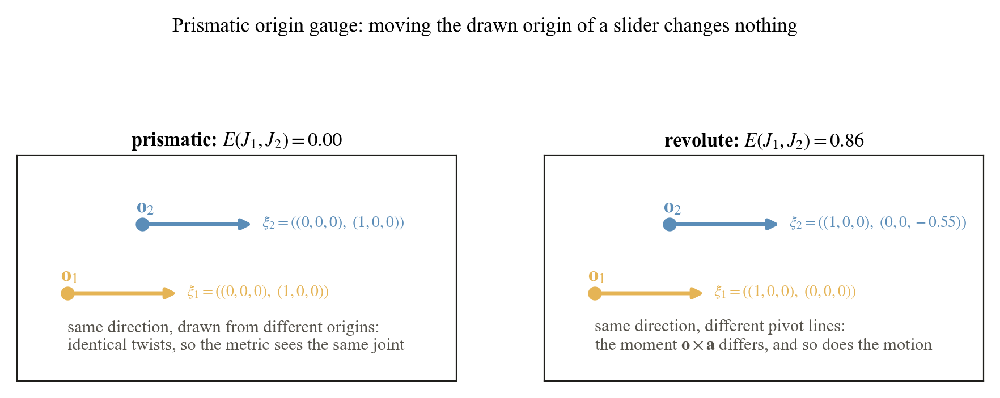

Left: every interval on the 2π orbit is the same motion. The optional wrap keeps the one whose midpoint lies in [−π, π). Right: shifting both limits of a GT [0, π/2] by θ. The default (raw limits) keeps growing. With the wrap switched on, a full turn returns E to zero, and the seam at θ = 135° is where the midpoint crosses π.
A revolute exponential is 2π-periodic, so shifting both limits by
2πk rewrites the same motion over the same anchor. The definition of
E uses the limits exactly as stored, so such a pair of encodings is
charged the shift. As an optional preprocessing step, wrap_revolute_limits
shifts a revolute joint's limits by the common 2πk that places the
midpoint ½(l⁻ + l⁺) in [−π, π), and
joint_to_endpoint_pair(joint, wrap_revolute=True) applies it before forming the pair.
Only revolute joints can be wrapped: a prismatic shift translates and a helical shift also
translates, so for them k = 0 is forced.
Off by default. Nothing in the library or the benchmark wraps unless asked. The stored
limits are the data the metric judges, and the stored state pins the anchor, so a full-turn shift is
treated like any other re-encoding the file could have avoided.
The wrap has a seam. Picking one representative per orbit is a choice of fundamental
domain, and at its boundary (midpoint exactly ±π) the representative jumps.
With the wrap on, E is invariant under the full-turn shift but is
discontinuous there, which is the other reason it stays optional.

Left: a slider drawn from two different origins is the same twist, E = 0. Right: the same construction for a hinge changes the moment o × a, so the pivot line moved and E is not zero.
A prismatic twist is (0, a) and contains no origin at all, so moving the
drawn origin is pure gauge and the metric returns zero. The prior origin score charges
‖o₁ − o₂‖ for it. For a revolute joint the origin matters through the moment,
which is the physically right behavior: a hinge on a different line moves the door differently.